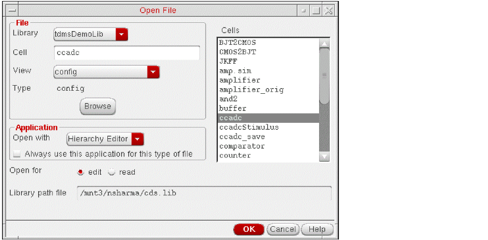
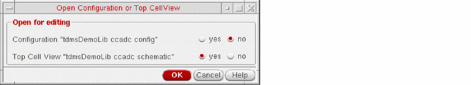

Starting the Hierarchy Editor
You can start the Hierarchy Editor from a terminal window, from the Virtuoso Studio design environment, and from Cadence applications such as the Virtuoso schematic editor.
To start the Hierarchy Editor from a terminal window,
-
Type the following command:
cdsHierEditor &
For a list of options with which you can start the Hierarchy Editor, see Filters Form.
To start the Hierarchy Editor from the Virtuoso Studio design environment,
-
Start the Virtuoso Studio design environment.
virtuoso & -
Choose File – Open.
The Open File form appears. - In the File section of the form, select the library, cell, and view of the configuration that you want to open.
- In the Application field, set the application to Hierarchy Editor, if it is not already set.
- In the Open for field, select edit if you want to edit the configuration or read if you want to open the configuration read-only.
-
Click OK.
The Open Configuration or Top Cellview form appears. - In the form, in the Configuration “configName” field, select yes. This selection opens the Hierarchy Editor.
- In the Top Cell View “top cellview Name” field, select yes if you want to open the schematic editor also or no if you do not want to open the schematic editor.
- Click OK.
The Hierarchy Editor opens and displays the configuration. If you chose yes in the Top Cell View field, the schematic editor also opens and displays the top cellview of the configuration. You can start the Hierarchy Editor from other Cadence applications such as the schematic editor.
Related Topics
Virtuoso Hierarchy Editor Command-line Options
Return to top